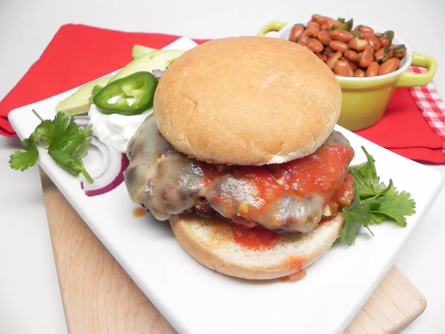

Burgers with a taco twist. I like to serve these taco burgers with sangria and a side of nachos.
Ever wanted to eat your tacos on a bun? Now you can with this recipe for taco burgers. The hamburger meat is seasoned with a taco packet before getting grilled and topped with cheese, sour cream, salsa, cilantro, tomato, avocado, and onion.
Ingredients
1 pound ground beef
1 (1 ounce) packet taco seasoning
5 slices pepper Jack cheese
5 hamburger buns, split
¼ cup sour cream, or to taste
¼ cup salsa, or to taste
1 cup chopped fresh cilantro
1 tomato, sliced
1 avocado, sliced
½ onion, sliced
Steps
Preheat an outdoor grill for medium-high heat and lightly oil the grate.
Mix ground beef and taco seasoning together in a bowl with your hands. Separate mixture into 5 equal portions. Form into patties.
Cook patties on the preheated grill for 5 minutes. Flip, top with pepper Jack cheese slices, and continue to grill until no longer pink or to desired doneness, about 5 minutes more. An instant-read thermometer inserted into the center of a patty should read at least 160 degrees F (70 degrees C).
Spread sour cream and salsa on buns. Add patties; top with cilantro, tomato, avocado, and onion.